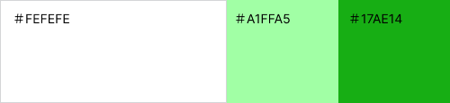
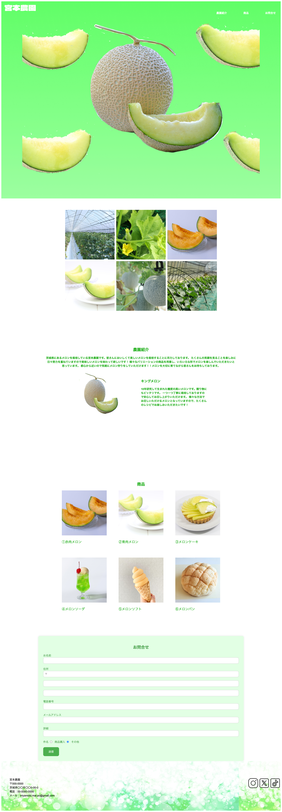

Work

農園のLP（架空サイト）
| 制作概要 | 個人経営の農園の知名度を高めるためのサイトを作りました。農園の雰囲気を知ってもらうのと 実際に足を運んでもらえつようにイメージ写真を載せました。個人経営なのでご要望に柔軟に対応できることをアピールするためにお問い合わせ部分も作成しました。 |
| ターゲット | 都内から日帰りレジャースポットを探している30代ファミリー・20代男女 |
| 目的 | サイトを見て農園に行ってみたいと思う人を増やす |
| 制作範囲・期間 | 企画・ワイヤーフレーム ：２週間 デザイン ：２週間 コーディング ：１ヶ月 |
| 使用ツール | Photoshop /Visual Studio Code/Figma |
| コンセプト | テーマ：商品（メロン）を魅力的に感じ、見ただけで食べたくなるようなサイト 全体的にメロンの要素を散りばめることで脳内をメロンでいっぱいにしたいという思いで作りました。 |
| サイト構成 | 農園の紹介を入れることで農家のこだわりをアピールし、魅力的な商品も並べました。商品を入れることで 単にメロンを食べられるだけではなく、レジャーとしても楽しめるというアピールの意味も込めました。 お問い合わせフォームを作ることでさまざまなご要望に柔軟に対応できるようにしました。 例：商品の在庫を知りたい、団体で訪問したいete... |
| デザイン | メロンでいっぱいにしたかったので緑をメインに使い、サイト全体をメロンソーダのようなイメージに しました。農園の雰囲気が分かるような画像を複数入れ、初めて訪れる人を引き寄せられるように工夫しました。 例えば、実際にメロンが栽培されている様子を載せ、安心安全な栽培をしていることを見せています。 |

